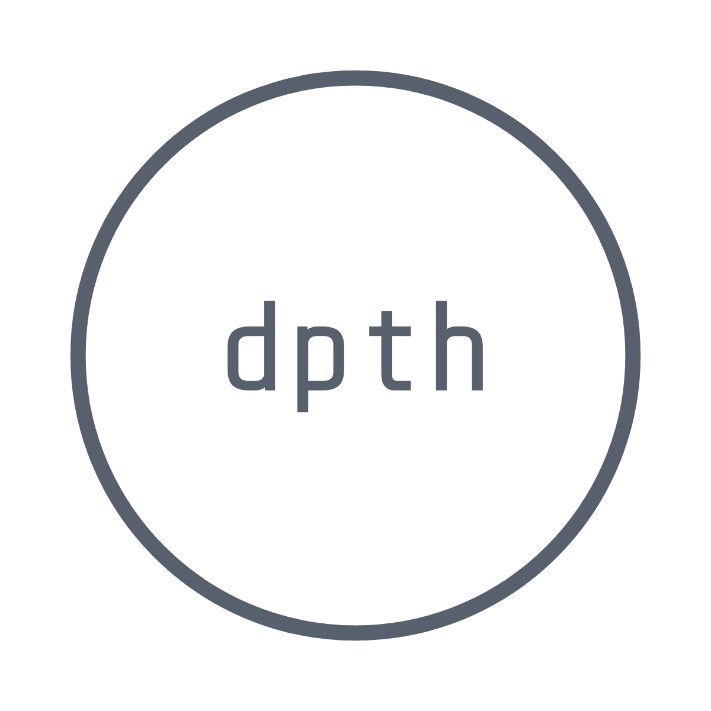

大学を中退し日々をぼんやりと過ごしていたが、このままではいけないと気づく。
Indrek Lasnによる記事「Become a Web Developer in 180 Days(without a CS degree)」をはじめとする、 未経験から開発者・エンジニアへの就職を成功させた人の記事を読んで勇気付けられる。自分もその後に続こうと決意。
上記記事で紹介されている内容のほか、IT業界の基本的な知識を身につけるために基本情報技術者の資格も取得を目指している。
この他にもできることがあれば色々やっていきたいと思います。
積極的に人と関わっていくことが自分にとっての課題だと思っているので、学習内容の発信を通して多くの方と関わっていきたいです。